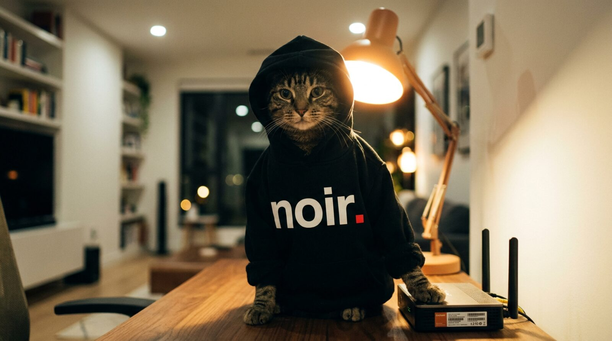
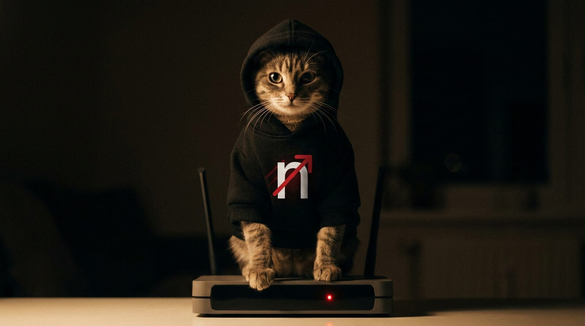

Протокол Reality и 36 вариантов обхода whitelist-режима: у всех операторов, во всех регионах. Без карты, подключение в Happ за 30 секунд.
8 ГБ обхода белых списков на пробном · без карты · без привязки

Заблокировали IP, и ты сидишь без связи, пока кто-то «починит». Чаще всего никогда.
Включается whitelist-режим мобильного интернета, и обычный VPN перестаёт открываться вообще.
«100% анонимность», «не логируем ничего»: маркетинг, за которым нельзя проверить ни строчки.
Никакой веб-регистрации, личных кабинетов и анкет. Всё происходит в боте и приложении Happ.
Открой @NoirVPN_bot и нажми «7 дней бесплатно». 8 ГБ обхода белых списков, 5 устройств, без карты.
Одна кнопка «Подключить»: Happ откроется сам и импортирует подписку. Профиль выбирать не нужно.
Happ сам берёт рабочий узел и держит соединение. Заблокировали IP? Переключит без твоего участия.
Один акцент: надёжность. Всё остальное подчинено тому, чтобы канал не падал и работал там, где остальные сдаются.
VLESS + Reality + Vision на Xray-core. Трафик неотличим от обычного TLS к реальному сайту, нечего блокировать по сигнатуре.
36 вариантов обхода whitelist-режима: когда оператор оставляет доступ только к «разрешённым» адресам. Работают во всех регионах и у всех операторов.
Multi-layer, быстрая ротация IP и мониторинг 24/7. Заблокировали ноду? Меняем за минуты, ты этого не замечаешь.
Без лимита трафика, до 300 Мбит/с на канале ноды. YouTube 4K без буферизации, загрузки без потолка.
Телефон, ноут, планшет, ТВ: одна подписка на всех. Можно поделиться с близкими.
Wildberries, Ozon, Госуслуги и банки открываются с включённым VPN, российские сервисы идут напрямую.
Германия, Нидерланды, США. Не сто стран на бумаге, а направления, за которыми мы реально следим. Статус нод виден в канале @noirvpn_status.

Работают во всех регионах и у всех операторов. Если один вариант прикрыли, бот выдаёт соседний, соединение не теряется.
Happ сам выбирает быстрый узел по urltest, тебе не нужно ничего переключать вручную.
Удобство Telegram-бота, но с современным протоколом, авто-переключением нод и маршрутизацией под РФ. Того, чего обычно нет ни у массовых ботов, ни у зарубежных сервисов.
| noir. | VPN-бот в Telegram | Зарубежный VPN | |
|---|---|---|---|
| Протокол | Reality · XTLS-Vision | Часто Shadowsocks / VLESS без Reality | WireGuard · OpenVPN |
| Маскировка под обычный TLS | Да, нет домена-прокладки | Редко | Детектится DPI |
| Работа в whitelist-режиме | Да, 36 вариантов | Как повезёт | Нет |
| Заблокировали IP ноды | Авто-failover по urltest | Меняют вручную, ждёшь | Переключаешь сервер сам |
| Банки, Госуслуги, Wildberries | Сплит-туннель, идут напрямую | Обычно весь трафик в туннеле | Зарубежный IP всё ломает |
| Подключение | 1 кнопка → авто-импорт в Happ | Ручной импорт конфига | Своё приложение, выбор сервера |
| Кто за сервисом | Публичный канал · @noirvpn_status | Чаще аноним-реселлер | Зарубежное юрлицо |
Без пакетов трафика и доплат за устройства. Чем дольше срок, тем дешевле месяц.
Единый тариф Noir: безлимит трафика, 5 устройств, все локации и 50 ГБ обхода белых списков в месяц (можно докупить). На длинном сроке месяц выходит дешевле, вплоть до 141 ₽.
Оплата картой РФ, по СБП или криптой прямо в боте. Вопросы по оплате: @HelpNoir_bot.
Забери 7 дней бесплатно прямо в Telegram. Без карты, без анкет, подключение за 30 секунд.
7 дней · 8 ГБ обхода · 5 устройств · без карты